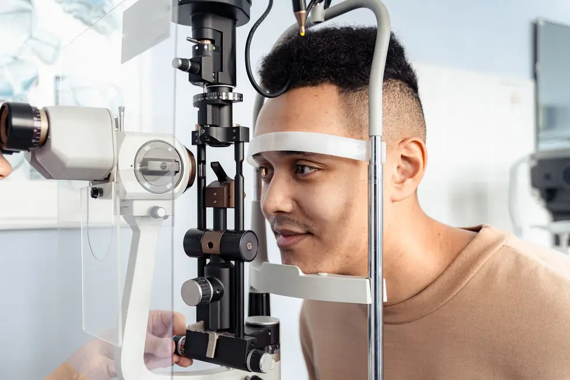
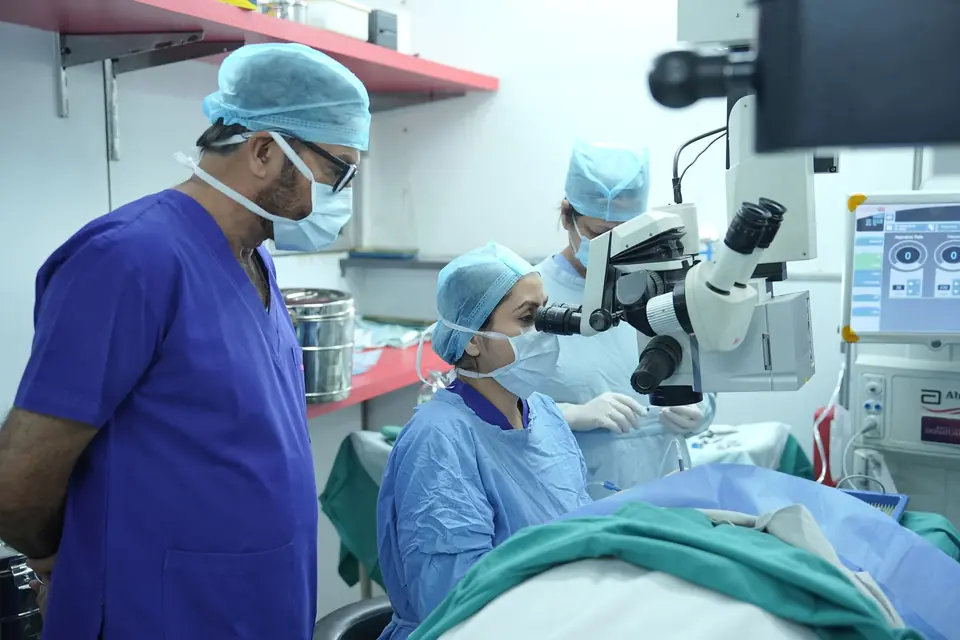

Eye care and retina surgery
Complete eye care, from a first eye test to cataract and retina surgery. The surgeon who operates is the same doctor who examines you.
Eye examinations

A full examination checks how well you see, the pressure inside the eye and the health of the retina at the back of the eye.
Many eye diseases cause no symptoms until vision is already affected. A check every one to two years after 40, and every year if you have diabetes, is the simplest way to catch them early.
What we look at
- Vision and glasses
- Eye pressure
- Glaucoma checks
- Dilated retina examination
- Diabetic eye screening
- Red, dry or itchy eyes
Cataract
A cataract is a clouding of the eye’s natural lens. It develops slowly, and it is the most common reason vision becomes blurred or dim with age.
Surgery replaces the cloudy lens with a clear artificial one. It is usually done under local anaesthetic, and you go home the same day. There’s no need to wait for a cataract to “ripen”: the right time for surgery is when it starts to get in the way of reading, driving or work.
Signs it may be time
- Vision that looks hazy or washed out
- Glare and halos from headlights at night
- Colours that seem faded or yellowed
- Glasses that need changing more often
Retina and vitreous

The retina is the light-sensitive layer at the back of the eye. Problems here are often silent at first, and they are where specialist care matters most.
Dr. Archana M is a vitreoretinal surgeon, trained to treat the retina and the clear gel (the vitreous) that fills the eye, using injections, laser and surgery. Diabetic and age-related changes are best found at a routine check-up, long before they affect sight.
Conditions we treat
- Diabetic retinopathy
- Diabetic macular oedema
- Macular degeneration
- Retinal vein occlusion
- Retinal tears
- Retinal detachment
- Macular hole
- Epiretinal membrane
- Vitreous haemorrhage
- Floaters and flashes
Call the same day for sudden changes in vision
A sudden shower of new floaters, flashes of light, or a shadow or curtain moving across your vision can mean a retinal tear or detachment. Early treatment gives the best chance of saving sight.
Tests used in this practice
Done at AGR and reviewed by Dr. Archana M.
Book with Dr. Archana M
Bring your current glasses and any previous eye reports. If your pupils are dilated, your vision will be blurred for a few hours, so plan not to drive home.
Book an appointmentOr call +91 80 0000 0000